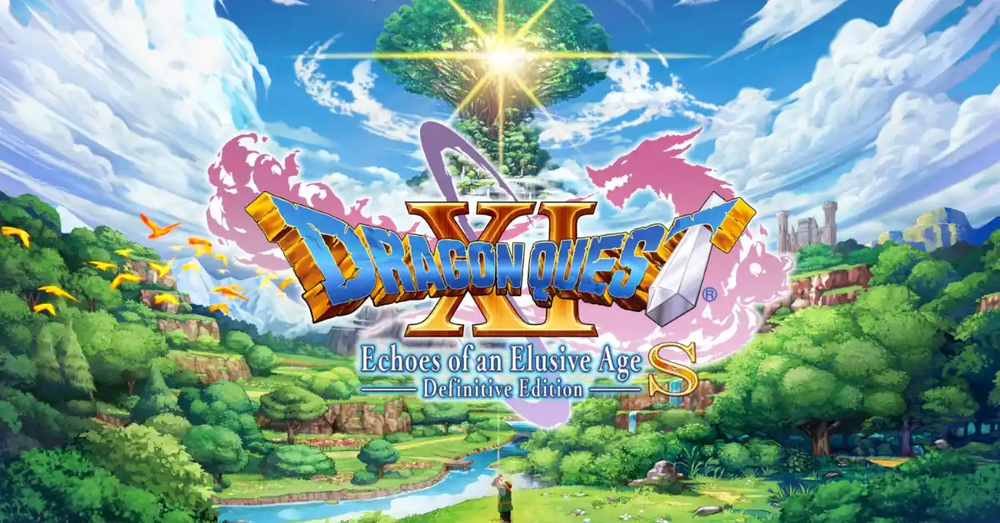

RP6 field report
Dragon Quest XI S: Echoes of an Elusive Age
🛠 Needs Tinkering
Sometimes the best tweak is patience. Rather than spending hours chasing the perfect settings, I've decided to wait for the upcoming Switch 2 version and…
Reviewed July 2026

Test setup
RP6 compatibility
- Device
- Retroid Pocket 6
- OS
- Armada
- Store
- Steam
- Compatibility layer
- Proton (multiple versions tested)
The play session
Experience
Dragon Quest XI S was one of the main reasons I wanted to try Armada on the RP6.
Unfortunately, after experimenting with different Proton versions, FEX settings and various tweaks, I couldn’t reach a point where the experience felt consistently enjoyable.
The game would run, but frequent stuttering and inconsistent frame pacing kept reminding me that I was testing rather than playing.
There’s no doubt that a lot of work has gone into making a game like this run on ARM hardware, but for me, it never reached the point where I could simply relax and enjoy the adventure.